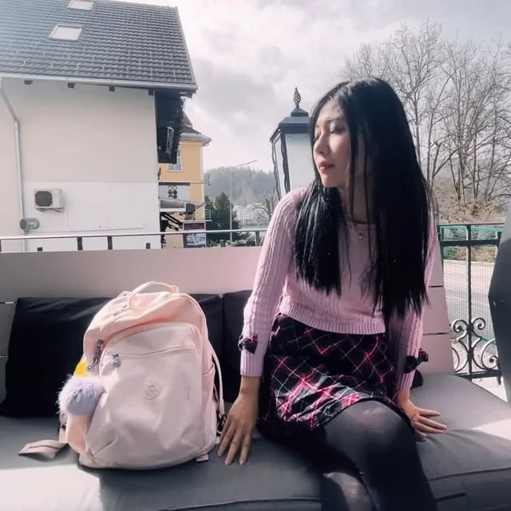
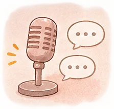
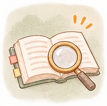
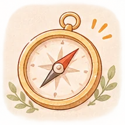
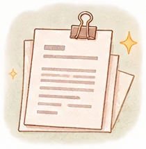
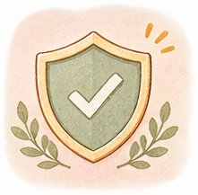
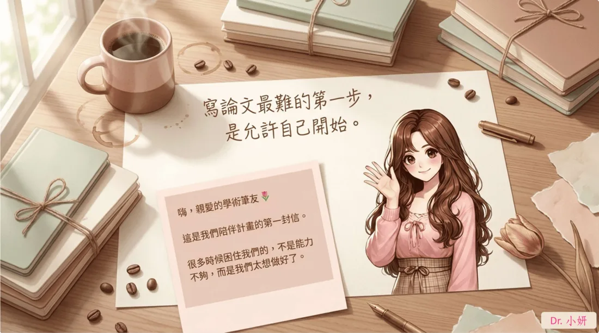
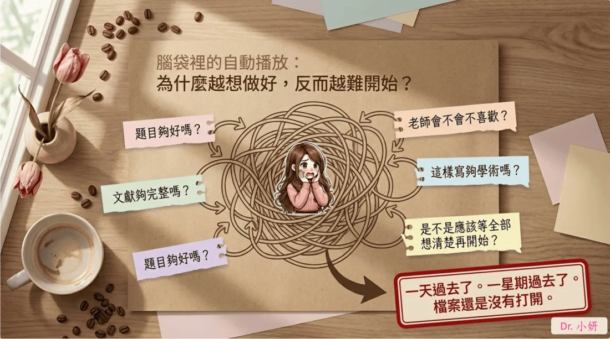
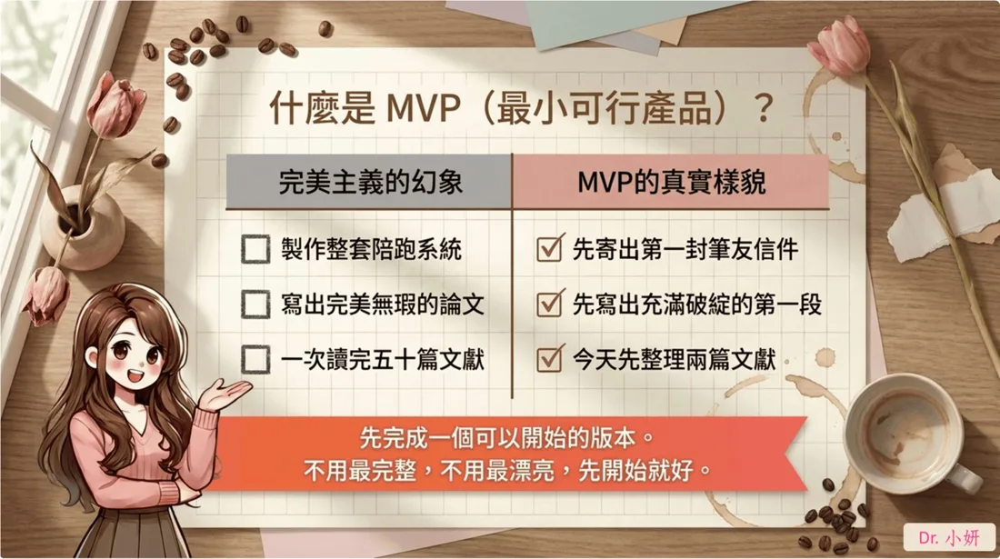
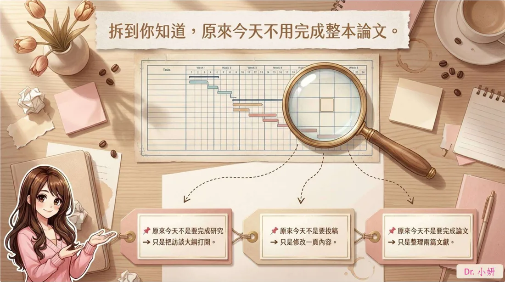

活動前
研究工作學習單
先想清楚：我現在在做什麼研究任務？哪些事不能交給 AI 決定？帶著自己的問題來。

論文寫作 × AI 輔助研究 × 研究方法
在研究與生活之間，留一個可以慢慢學習、自由探索的地方。
很高興在這裡遇見你。
AI 最讓人擔心的，不是它不知道答案，而是它講得太像自己什麼都知道。
從找文獻、確認研究缺口，到檢查論證與研究方法，兩個小時，Dr. 小妍帶你練習怎麼讓 AI 幫忙，而不是替你做決定。
想參加下一次小聚？加 LINE，第一個通知你
其實做研究不用每個都學會。知道自己卡在哪一站，再找對的 AI 幫忙就好。
問題通常不是工具不夠多，而是還沒想清楚：我現在正在做什麼研究任務？這場小聚就從這個問題開始。
每一段都有現場示範。標示「十月最多人勾選」的，是十月 25 位學員在回饋卡上最常選為「最有幫助」的部分。

把還說不清楚的研究想法，先講出來，再慢慢整理。

從手上的文獻出發，往外找更多 Evidence。
十月最多人勾選・第 2 名
檢查研究缺口（Gap）、研究問題（RQ）和研究方法（Method）有沒有接起來。
十月最多人勾選・第 3 名把方法章翻成一張可以執行的分析地圖。
請 AI 當審稿人，檢查論證、證據和前後不一致的地方。
十月最多人勾選・第 1 名
讓 AI 協助處理格式和文件排版工作。

確認 Evidence，守住學術倫理和你自己的研究判斷。
嗨，我是 Dr. 小妍。🌷
我一直相信，AI 可以陪我們做研究，但不能替我們決定研究要走向哪裡。
所以比起教你記住更多工具，我更想陪你練習：當研究卡住時，怎麼找到問題、理解證據，再慢慢做出自己的判斷。
這也是我開始舉辦 AI × 學術小聚的原因。
有些時候，研究路上需要的不是更多資料，而是一個可以一起整理的人。
其中一題答不出來，就先不要急著 Copy、Accept、Submit。
STOP → VERIFY → DECIDE
不是聽完就結束。每一份都是 Dr. 小妍整理好的實際教材，回家後可以照著自己練習。
先想清楚：我現在在做什麼研究任務？哪些事不能交給 AI 決定？帶著自己的問題來。
把研究問題帶進 AI Workflow：從研究任務開始，讓 AI 協助整理、查證與審閱。
當天每一段示範都在裡面，忘記步驟時可以回頭對照。
從 APA 表格到圖表目錄，讓 AI 接手最耗人的格式整理。
封面、頁碼與浮水印：從一份純內文，到完整的論文格式。
學員匿名回饋（節錄），已移除可辨識個人身分的內容。
可以！小聚不要求你已經熟悉這些工具。我們會從研究情境出發，一起看這些工具可以怎麼協助研究工作。
可以參加，不過不同領域的研究方法和需求確實有差異。小聚會介紹 AI 輔助研究的思考方式和應用情境，部分案例比較貼近特定研究領域，不一定能直接套用到每一個人的論文。
比較像一場有主題、有教學內容的線上學術交流。Dr. 小妍會分享 AI 研究工具的用法，也保留時間讓大家提問、討論。
活動前有一份學習單，幫你先整理自己的問題。活動後，你會收到課後講義、小聚完整簡報，以及兩封學術小信（Claude 協助 Word 排版上、下），方便回頭對照、自己練習。
小聚沒有錄影回放，建議選一場能完整參加的時間。
可以提出跟主題相關的問題。不過小聚是團體交流，沒辦法完整討論每個人的研究設計。如果需要深入討論，Dr. 小妍也有提供一對一諮詢，歡迎透過 LINE 官方帳號詢問。
有時候，只是希望在研究路上，有人能陪自己一起想清楚。
🌷 已經有 140+ 位筆友，和小妍一起走過這段學術旅程
💌 學術筆友計畫：兩季共 32 封信，一封一封寄到你的信箱。每封信附學習單，讀完可以直接回信問小妍。
🎬 第一季影音版・超早鳥預購優惠
15 支講解影片・共 75 分鐘以上
預購到 11/30（一）23:59
每封信都從一個研究生常卡住的問題出發，附上學習單、小任務或 AI Prompt，讀完就能回到自己的論文動手試試看。
點選下方，切換兩季的信件目錄
從論文焦慮、和 AI 協作、論文架構，到和指導教授溝通、準備口試，陪你重新找回和研究相處的步調。
01為什麼越想把論文寫好，越容易打不開檔案？記得下載甘特圖小筆記喔～
02研究題目有時不是一開始就漂亮幫你的題目做一次健康檢查。
03先求有，不是降低標準，是建立地基小任務｜替你的論文整理出一個「初步的架構」。
04和 AI 跳一支研究的雙人舞AI 不是代寫小精靈，而是陪你整理步伐的舞伴
05NotebookLM 幫你看資料，GPT 幫你看見自己在想什麼GPT 和 NotebookLM，不是誰比較強，而是分工不同
06好的 prompt，不只是咒語，更是一種研究整理能力週末小任務｜把混亂變成一段可以陪你思考的 prompt
07論文卡住時，先不要急著再找十篇文獻找出你的核心文獻
08段落之間沒有接起來，讀者就會迷路從靈感式跳接，到推理式書寫
09Discussion 不是心得感想，也不是重複結果週末小任務｜幫你的 Discussion 對一次焦
10你聽見的是否定，但老師想說的，可能只是方向還沒對齊老師 feedback 的訊號判讀練習
11讓 meeting 成為論文往前的一小步把你的思考，整理成可以一起討論的樣子
12寫 Email 給老師，其實是在整理自己的位置週末小任務｜試著撰寫一封「更清楚」的學術 Email
13口試前，真正重要的不是把 PPT 做漂亮怎麼讓教授聽懂你的研究主線
14教授提問時，你不用急著證明自己完美口試回答，其實比較像一場學術對話
15筆友計畫結業式週末小任務｜送給未來自己的一封信 🌱
從研究問題、文獻對話、研究方法，到論證寫作與修稿，陪你把腦袋裡的研究想法，一步一步寫成論文。
01你的研究，現在想說什麼？花 10 分鐘，寫下你心中一直放不下的問題 🌱
02明明已經有研究方向了，為什麼還是不知道自己真正想問什麼？從一個研究興趣出發，慢慢長出真正想回答的研究問題
03終於想到研究問題了，可是它真的值得研究嗎？從「我很好奇」再往前一步，找到這個問題值得被追問的理由。
04教授問：你的研究貢獻是什麼？你答得出來嗎？週末小任務｜重新整理你的研究定位與價值
05你真的需要把每篇 Paper 都讀完嗎？從快速掃描到深入理解，找到適合自己的文獻閱讀方式
06文獻看了十幾篇，為什麼寫出來還是像在逐篇報告？從文獻比較到文獻整合：讓不同研究開始彼此對話
07一篇 Paper，怎麼寫進自己的文獻探討？從研究發現到自己的論述：讓引用的文獻真正支持你的主張
08質性還是量化？你的研究到底適合哪一種方法？別急著選研究方法，先看看你的研究問題需要什麼證據。
09你的研究，到底該選哪些變項？找到相關文獻還不夠，你能說清楚為什麼選擇這些變項嗎？
10訪談都做完了，為什麼還是不知道怎麼分析？從研究取徑、資料分析方法到編碼技術，找到適合自己研究的分析方向。
11明明有引用文獻，為什麼這句話還是不能這樣寫？從原文證據到學術主張，練習辨認那些不小心多說了一步的推論。
12研究結果明明是這樣，為什麼討論卻說得太滿？從研究結果到學術解釋，辨認那些超出證據的推論。
13Introduction、Methods、Results、Discussion，到底各自該寫什麼？理解論文章節的不同任務，讓研究論述更清楚。
14論文都寫好了，為什麼 Word 排版還是讓人崩潰？從目錄、頁碼到分節，整理常見的排版問題。
15APA 規則這麼多，到底要怎麼檢查才不會漏東漏西？不必背下所有規則，學會建立自己的引用查核流程。
16教授把論文改得密密麻麻，到底要怎麼辦？從理解批註到安排修稿，讓修改不再越改越亂。
17現在，輪到你說了。做研究的最後，是慢慢形成屬於自己的主張。
✦ 兩季內容各自獨立。一起收藏之後，可以從現在最需要的那一季開始讀。
筆友回信與報名留言（匿名節錄），已移除可辨識個人身分的內容。
＋兩季 32 封文字信
NT$1,911
影片 2027/1/11 開始寄，3/17 前完成 15 支，可觀看到 2028/6/30。如果影片沒有如期開始或完成，影音部分退還 500 元，文字信照常寄給你。
完成付款後，才算保留名額。
不是直播課程，也沒有固定的上課時間。每一封信都會寄到你的 Email，你可以照自己的步調，在方便的時候閱讀和練習。第一季有影音版：15 支講解影片，共 75 分鐘以上，現在是超早鳥預購優惠；第二季以圖文搭配學習單陪伴你。
可以，而且很歡迎！想分享近況，或說說最近卡住的地方，都可以直接回信，Dr. 小妍會一封一封親自讀、親自回覆。不回信也完全沒關係，按照自己的步調讀就好。
適合。信件不假設每個人都在同一個階段：還在找題目的人，可以先從研究問題開始；已經進入寫作的人，可以直接取用文獻整合、論證寫作和修稿的那幾封。
兩季內容各自獨立。如果你現在最需要的是「重新打開論文」的力氣，或正在煩惱怎麼跟指導教授溝通、準備口試，可以從第一季開始；如果你卡在研究問題、文獻回顧、研究方法或論證寫作，可以從第二季開始。每個梯次都有報名截止日期，請以當期公告為準；錯過的話，可以等下一梯次開放再加入。
嗨，我是 Dr. 小妍。🌷
寫論文常常是一件各自努力、有點孤單的事。我把自己和研究生們一路上最容易卡住的地方，整理成信、工作坊和小聚。
我一直相信，AI 可以陪我們做研究，但不能替我們決定研究要走向哪裡。不是替你寫論文，而是陪你慢慢長出自己的研究判斷。
有些時候，研究路上需要的不是更多資料，而是一個可以一起整理的人。
需要針對自己的研究做一對一討論？加 LINE 詢問一對一研究諮詢
從讀懂一篇文獻、整合多篇研究，到帶著自己卡住的研究來診斷。11 月到 12 月共五場，兩位老師陪你從不同的研究卡關出發，找到下一步可以前進的方向。
Google Meet 線上進行・剩餘名額請見報名表
不同的卡關，適合不同的場次 ↓
研究完成後，如何開始準備投稿？從選擇投稿方向、整理研究重點，到將既有研究轉化成適合投稿的文章，認識學術投稿前需要做的準備。
適合：研究做完了，想整理成研討會或期刊文章的你
當研究遇到瓶頸，有時候需要的不是再多讀幾篇文獻，而是重新檢視研究問題、研究設計與目前的進度。5–7 人小班，兩位老師從不同角度，陪你釐清困難和後續可以調整的方向。
適合：知道自己卡住，卻說不清楚卡在哪裡的你
從整理研究成果、選擇投稿方向，到完成一篇適合投稿的學術文章。
從研究問題、資料蒐集到編碼分析，一起理解質性研究的實作流程。
不論是剛開始想題目，還是已經寫到一半，只要有卡住的地方，都可以帶來。兩位老師依你的研究問題與需求，從不同角度一起找出關鍵卡點。
| 11/28（六）AI × 文獻整合實戰班19:00–22:00 | NT$1,111 |
| 12/12（六）研討會／期刊投稿實戰班19:00–22:00 | NT$1,111 |
| 12/19（六）質性研究實戰班19:00–22:00 | NT$1,111 |
| 12/13（日）或 12/20（日）研究診斷班19:00–22:00 | NT$1,717 |
可以。每一場都可以單獨報名，也可以多場一起報。研究診斷班有 12/13 和 12/20 兩個時段，選一個方便的就好。
在報名表勾選所有想參加的場次，填上總金額。送出後會看到付款連結，一次付清就好。例如報兩場工作坊，就輸入 2,222 元。
三場實戰班（11/28、12/12、12/19）都提供 30 天錄影回放。研究診斷班會討論每個人的研究內容，基於隱私考量，不提供錄影回放。
工作坊是針對一個主題的教學與示範，例如文獻整合、質性研究、投稿。研究診斷班是 5–7 人小班，帶著你自己現在卡住的研究來，兩位老師一起幫你找出關鍵問題與下一步。
歡迎透過 LINE 官方帳號詢問。
一場給要備課的老師，一場給要口試的研究生。Dr. 小妍完整示範，你不用跟著操作，專心看懂整個流程就好。
每場限 15 人・NT$555・Google Meet 線上
帶領：Dr. 小妍寫作與思考的陪伴者AI 可以幫你省下整理和排版的時間，但這堂課要教什麼、怎麼教，還是由你決定。
適合：教師、講師、助教、臨床教學或醫學教育工作者，以及要帶讀書會的研究生
帶得走：📝 課前學習單 📖 課後講義 🖥️ 完整示範簡報
AI 可以幫你整理、精簡、模擬提問，但你的研究故事，要由你自己說。
適合：即將學位口試、計畫書口試的碩博士生，以及要在研討會做口頭發表的人
帶得走：📝 課前學習單 📖 課後講義 ❓ 口試模擬提問 prompt：讓 AI 針對你的研究出題 🖥️ 完整示範簡報
可以。兩場都以示範為主，不需要事先熟悉任何工具。你會看到完整流程，回去再照自己的步調練習。
不用。Dr. 小妍會完整示範，你可以專心看懂每一步在做什麼。課後講義和簡報可以讓你回頭對照、自己練習。
沒有提供錄影回放。課後講義和完整簡報，可以讓你回頭對照、自己練習。
可以。計畫書口試同樣適用。提早了解口試流程，寫論文時就會知道要為口試準備什麼。
可以。如果你要帶讀書會、當助教，或常需要準備課堂報告，同樣的流程也用得上。
💌 學術筆友計畫・免費試讀｜第一季・第 01 封
from Dr. 小妍
📎 這封信的最後，附上一份小禮物：研究甘特圖小筆記
嗨，親愛的筆友 🌷
這是我們五週陪伴計畫的第一封信。

說真的，當我開始寫這封信的時候，心裡偷偷鬆了一口氣。
因為這封信能夠順利出現在你的信箱裡，其實沒有那麼理所當然。
如果你認識我久一點，可能會知道，我是一個非常容易把事情想得很大的人。
而且是大到會把自己困住的那種。
——
我曾經想過，要不要做一個完整的研究陪跑計畫。
從研究題目、文獻整理、研究設計、資料分析、論文寫作，到投稿、國際合作，把整段研究旅程全部整理起來。
然後錄很多影片、設計很多講義、準備很多學習單，做出一個非常完整的系統。
可是，當我把事情想得愈完整，它反而愈沒有辦法開始。
後來我發現，很多時候困住我們的，是我們太想把事情做好了。
例如，我曾經想錄音給大家聽。
結果一想到錄音，就開始想：如果只是聲音，大家會不會聽不清楚？
是不是應該做逐字稿？逐字稿要放在哪裡？Podcast 好像不能放字幕？那是不是應該放到 YouTube？
可是 YouTube 如果只有一張圖片會不會很無聊？
——
如果錄影片呢？那我要不要露臉？如果講錯，是不是要重錄？
於是，原本只是錄一段音給學生聽，最後在我的腦海裡變成：建立一個完整影音平台。
——
後來我發現，很多學生寫論文的時候，其實也是這樣。

本來只是想打開 Word，結果腦袋開始自動播放：
題目夠好嗎？文獻夠完整嗎？老師會不會不喜歡？這樣寫夠學術嗎？是不是應該再看十篇文獻？
然後想著想著，一天過去了、兩天過去了、一個星期過去了，Word 還是沒有打開。
我最常使用的 GPT 功能是語音轉錄；或者更準確地說，是放聲思考。
當我開始不知道該往哪裡走的時候，我常常會把腦袋裡那些亂七八糟的想法直接說出來。
想到什麼就說什麼。
沒有順序也沒關係、沒有邏輯也沒關係、甚至離題也沒關係～
因為很多時候，真正困住我的，是太多想法同時擠在腦袋裡。
每件事情都很大、每件事情都很複雜、每件事情都不知道該從哪裡開始。
可是當我開始把它說出來、開始整理、開始一點一點拆開，事情就會慢慢變小……
慢慢變得可以理解。
慢慢變得可以開始。
——
我後來發現，
很多時候，我不是不知道怎麼做，而是想法太多了。
如果你也常常因為想把事情準備完整，而遲遲不敢開始，接下來這段故事，也許你會很熟悉。
後來我開始思考一件事：在所有我想做的事情裡，有沒有哪一件事情，是我一直持續在做，而且做得很開心的？
答案其實很簡單，那就是寫信。
從開始經營小妍老師以來，我一直持續在寫電子報。
每隔一段時間，總會收到一些回信。
有的同學分享自己的研究進度、有的同學分享最近卡關的地方、有的同學跟我說：
老師，你之前分享的筆記救了我。
每次看到這些回信，我都會有一種很特別的感覺：原來那些文字真的有走到某個人的生命裡。
偷偷告訴你，有時候忙到一半，還是會忍不住點開信箱，看看有沒有同學寫信來。
因為我真的很喜歡收到你們的來信 🤍
——
所以後來我想，也許我不用一開始就做出最完整的課程，我可以先從一件我做得到，也喜歡做的事情開始。
那就是寫信。
於是就有了現在的學術筆友計畫。
——
後來我接觸到一個概念，叫做 MVP（Minimum Viable Product），最小可行產品。
如果用比較白話的方式來說，就是：
先完成一個可以開始的版本。
不用最完整、不用最漂亮、不用一次到位。
先開始就好。

我突然發現，學術筆友計畫本身，其實就是我的 MVP。
它不是完整課程、不是影音平台。
而是：先寫第一封信、先寄第一份附件、先開始和學生對話。
很多時候，
讓事情前進的不是更完美的規劃，
而是那個願意開始的瞬間。
前陣子出國的時候，我在慕尼黑機場和杜拜機場轉機。
如果你去過那兩個機場，大概就知道它們有多大。
我一路拖著行李快走，看著登機時間愈來愈近，一邊喘，一邊開始反省人生。
因為以前的我跑過半馬、也跑過全馬，但已經很久沒有認真跑步了。
於是我一路走，一路想：
不行！回去一定要把體力練回來。
可是回台灣之後，當我想到半馬的時候，我瞬間覺得任務好艱鉅。
二十一公里耶！
後來我對自己說：不要想半馬，今天只要站上跑步機十五分鐘就好。
快走也可以、慢慢走也可以、聽音樂也可以、看 YouTube 也可以。
只要站上去，今天就算成功。
——
寫論文其實也是這樣。
你害怕的從來不是今天的工作量。
你害怕的是腦海裡那本還沒完成的論文。
不要一直看著二十一公里，先跨出眼前的第一步。
這也是為什麼今天想把甘特圖分享給你。
甘特圖其實不只是在排時間，
它真正重要的功能，是把一件很大的事情拆小。
拆到你做得到。

拆到你知道：
原來今天不是要完成論文，
只是整理兩篇文獻；
原來今天不是要完成研究，
只是把訪談大綱打開；
原來今天不是要投稿，
只是修改一頁內容。
——
前陣子我曾經在 Threads 分享過甘特圖筆記。
後來有同學在她的 Threads 上分享，因為這份筆記，她終於往前走了第一步。
看到那則留言的時候，我超級感動。
研究有時候最難的地方，在於找不到開始的方法。
而甘特圖，就是一張研究地圖。
它會告訴你：今天應該往哪個方向前進。
甘特圖不只是時間表，
更是一張研究地圖。
最後想提醒你一件事：
不要連甘特圖都完美主義。
很多同學做好甘特圖之後，
又開始焦慮。
老師，我落後了。
老師，我沒有照進度走。
老師，我是不是失敗了？
——
生命是活的、行程表是死的。
甘特圖是來幫助你的，不是來責備你的，更不是來證明你有沒有認真。
所以請記得留一些緩衝、留一些彈性、留一些可以喘口氣的空間。
這封信裡，
我想送給你一份我自己很常使用，也很常分享給學生的工具。
📎 研究甘特圖小冊子（記得點圖下載）
——
你不用今天就做出完美版本。
可以先翻開第一頁看看。
然後問問自己：
今天的我，
準備先完成哪一小步呢？
如果你願意，也歡迎在 💬 官方 LINE 跟我說說話。
哪怕只是簡單回我一句：
「我在。」
我都會很開心收到你的訊息。
很開心成為你的筆友 ✍️
Dr. 小妍
💌 第二封信，已經寫好了
from Dr. 小妍
親愛的筆友：
今天想和你聊聊研究題目。
很多時候，我們會以為研究題目是一個突然出現的靈感。
好像某天坐在書桌前，突然靈光一閃，就知道自己要研究什麼了。
但後來我慢慢覺得，研究題目其實比較像是一顆種子。
不是一開始就漂亮，也不是一開始就長得很清楚。
📝 第一封信附的學習單｜研究甘特圖小筆記
💬 第二季・第 01 封附的 AI 加碼練習
「請當我的研究對話夥伴，以蘇格拉底式提問陪我探索真正關心的問題。請總共問我五個循序漸進的問題，一次只問一題，等我回答後再追問。不要假設我已有答案，也不要替我編造研究缺口。結束後，請保留我的原意，整理出我目前關心的問題、在意的原因，以及還需要查證的地方。」
AI 在這裡是提問的夥伴，不是替你決定研究方向的人。
🎬 第一季影音版・預購中
超早鳥優惠到 11/30（一）23:59
兩季文字＋第一季影音 NT$1,911
影片 2027/1/11 開始寄，3/17 前完成 15 支，可觀看到 2028/6/30。如果影片沒有如期開始或完成，影音部分退還 500 元。